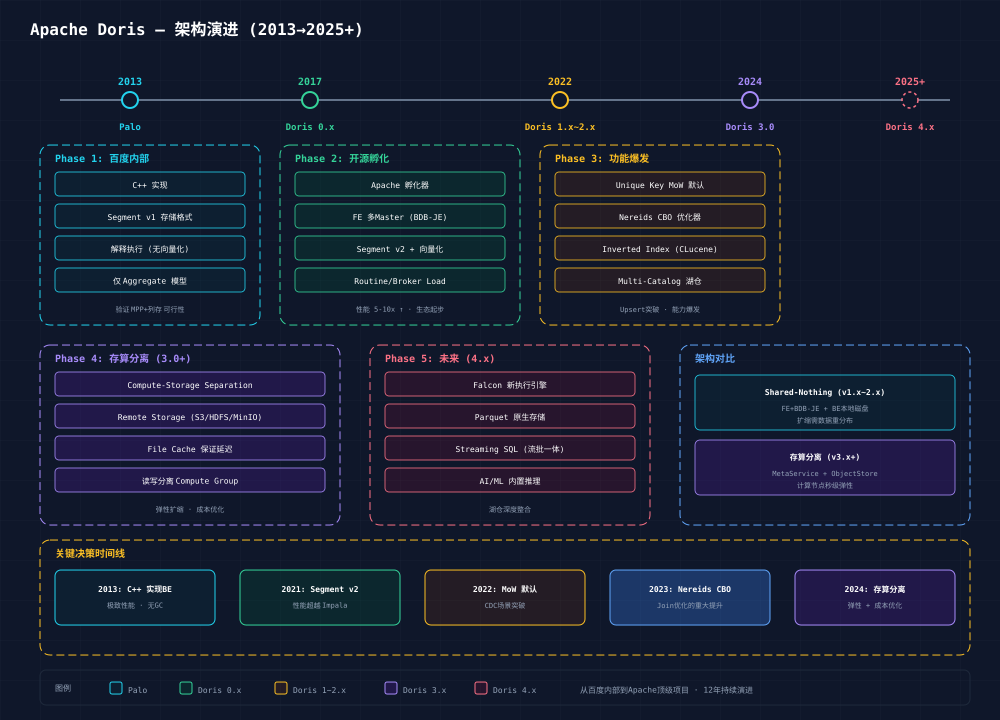

Apache Doris 经历了从百度内部 OLAP 引擎到 Apache 顶级项目的十多年演进，架构不断进化以应对日益复杂的分析需求。

Phase 1: Palo (2013~2017) — 百度内部时代
Phase 2: Doris 0.x (2017~2021) — 开源孵化期
Phase 3: Doris 1.x2.x (20222024) — 功能爆发期
Phase 4: Doris 3.0+ (2024~至今) — 存算分离
Phase 5: 4.x+ Roadmap (2025+ 规划中)
| 时间 | 决策 | 影响 |
|---|---|---|
| 2013 | C++ 实现 BE | 极致性能基础，无 GC 开销 |
| 2017 | 开源 + Apache 捐赠 | 生态增长，社区贡献 |
| 2021 | Segment v2 + 向量化 | 查询性能超越 Impala/Kylin |
| 2022 | Unique Key MoW | 实时 Upsert 能力，CDC 场景突破 |
| 2023 | Nereids CBO 优化器 | Join 优化重大提升 |
| 2023 | Multi-Catalog 湖仓 | 架构从独立数仓扩展到联邦查询 |
| 2024 | 存算分离 3.0 | 成本优化 + 弹性扩展 |
| 2025 | 倒排索引 2.0 | 日志搜索场景直接竞争 ES |
┌──────────────────────────────────────────────┐
│ 实时分析 OLAP │
├──────────────┬────────────────┬───────────────┤
│ 高性能查询 │ 实时导入 │ 统一模型 │
│ (Doris ★) │ (Doris ★) │ (Doris ★) │
├──────────────┼────────────────┼───────────────┤
│ ClickHouse │ Kafka+Flink │ StarRocks │
│ StarRocks │ => Doris │ │
└──────────────┴────────────────┴───────────────┘
Doris vs 主要竞品:
┌──────────────┬──────────┬──────────┬──────────┬──────────┐
│ 维度 │ Doris │ ClickHouse│ StarRocks│ Impala │
├──────────────┼──────────┼──────────┼──────────┼──────────┤
│ 架构 │ MPP+C++ │ MPP+C++ │ MPP+C++ │ MPP+C++ │
│ Upsert 能力 │ ★★★★★ │ ★★ │ ★★★★ │ ★★ │
│ 高并发查询 │ ★★★★ │ ★★ │ ★★★★ │ ★★ │
│ 大宽表扫描 │ ★★★★ │ ★★★★★ │ ★★★★ │ ★★★ │
│ 湖仓一体 │ ★★★★ │ ★★★ │ ★★★★ │ ★★★★★ │
│ 实时导入 │ ★★★★★ │ ★★★ │ ★★★★ │ ★★ │
│ 存算分离 │ ★★★★ │ ★★★★★ │ ★★★★ │ ★★ │
│ 运维复杂度 │ ★★★(中) │ ★★★★(高)│ ★★★(中) │ ★★★★★(高)│
└──────────────┴──────────┴──────────┴──────────┴──────────┘💡 核心差异化优势：Doris 在 Upsert (MoW) + 高并发查询 + 实时导入 三个维度形成了独特优势组合，这是 ClickHouse/Impala 无法同时覆盖的。